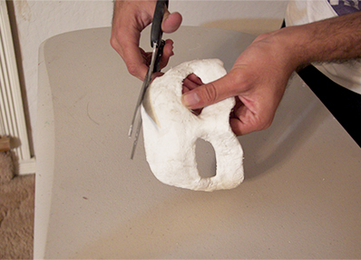

<!--START SLIDE-->

<div>
  <div class="table-cell-left">
    <h2>Refine</h2>
    <div style="width:360px;">
Apply more plaster wrap to the mask and smooth them out to make the mask even more sturdy. One more layer should be good. Also cut off any fringe and messy edges.

</div>
  </div>
  <div class="table-cell-right">  </div>
</div>
<!--END SLIDE 1-->